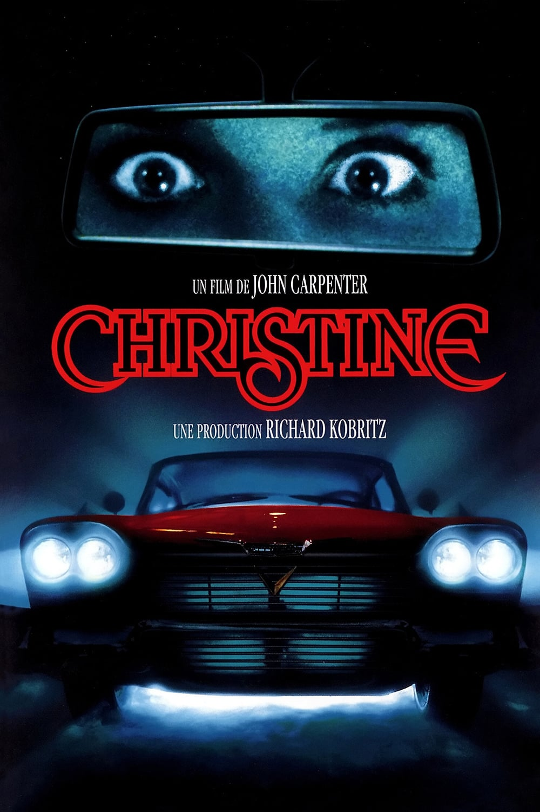
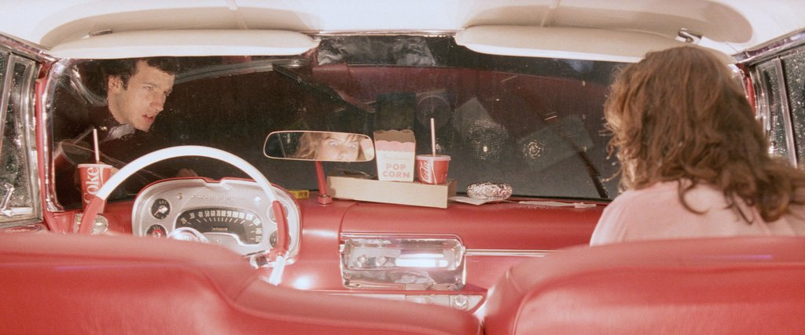

5H20 ➭ Christine - John Carpenter, 1983, 111 min
La première fois qu'Arnie vit Christine, il tomba en extase devant cette beauté aux formes éblouissantes. C'était dit, ils aillaient lier leurs destins pour le meilleur et pour le pire. Mais Christine, la belle Plymouth, modèle 57, n'aime pas trop les rivales. Gare à celles qui voudront approcher Arnie.